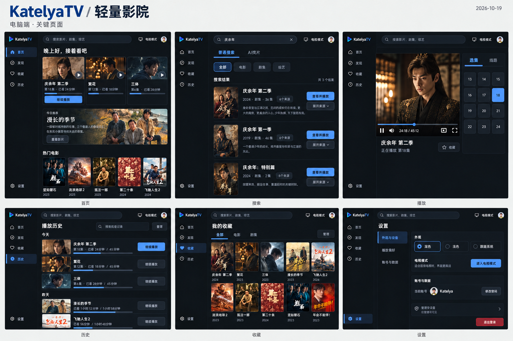
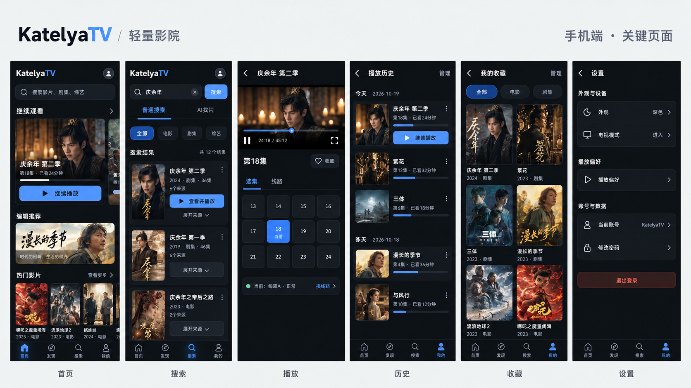
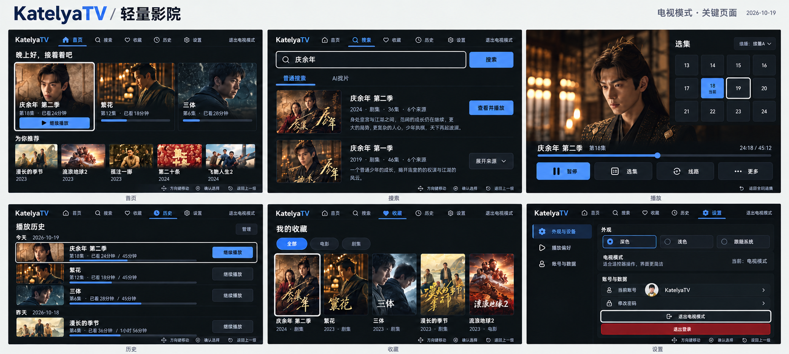

续播先到达
有历史时，继续观看优先于精选推荐。标题、集数、进度与继续播放放在一起。
KATELYATV / DESIGN REVIEW / 2026.10.19
同一套视觉，适合三种使用方式。电脑与手机优先找片、续播；电视围绕遥控器焦点组织操作。
VISUAL SYSTEM
沿用蓝色品牌识别，以平面深灰、清晰文字和适度留白减少界面噪声。深色展示主样稿，浅色保留同一套语义映射。
有历史时，继续观看优先于精选推荐。标题、集数、进度与继续播放放在一起。
搜索、收藏、历史与设置有固定入口。选集与线路明确分组，当前状态不藏在图标里。
电脑并排、手机纵向、电视分组导航。统一颜色和状态，按设备调整布局与输入方式。
#101216
#191D24
#F1F3F5
#78AAFF
#F5F6F8
#FFFFFF
#17202C
#2458B8
蓝色表示已选中或当前播放；白色外环表示遥控器焦点。移动到第 19 集时，第 18 集仍保持当前播放标记。
DESKTOP
左侧导航、顶部常驻搜索；首页把续播放在最前，搜索按影片聚合，播放页将选集与线路放到侧栏。

继续观看 → 紧凑精选 → 热门分类，减少推荐横幅占用。
先辨认影片，再按需展开来源，普通搜索与 AI 找片分开。
播放器与选集并排；实际视频容器固定 16:9，不能裁切或拉伸正片。
MOBILE
底栏：首页、发现、搜索、我的。收藏、历史和设置归入“我的”；播放页保留短横屏画幅与直接可达的选集。

高频入口放底部，主要按钮建议 48px 高；避免只在悬停时出现操作。
16:9 播放器 → 集数与收藏 → 选集/线路，不用大推荐区挤压操作。
历史直接续播，收藏使用两列网格；管理状态再显示批量删除。
TELEVISION
大字号、明确的焦点组、可预测的返回路径。播放中选集作为浮层打开，当前项与聚焦项各自保持状态。

左右同组移动，上下切换行或分区。每屏一个焦点，确认只执行当前项。
先关闭面板，再退出全屏，再返回上一页；返回列表恢复原焦点和位置。
异步检测与内容更新不抢焦点，背景测速不打断正常播放。
REVIEW
三端各六个关键页面概念样稿，以及颜色、字体、组件状态、电视按键、加载与失败状态的统一规范。
样稿为生成式视觉稿，精确画幅、尺寸和文案以规范为准。浅色已定义颜色映射，本轮未另绘六页浅色稿。
页面使用演示内容，未接入接口、播放器、账号或数据存储。样稿不意味着新增功能已经实现；现有业务代码未改动。后续还需覆盖登录、发现、AI 面板与管理员页面的完整状态，并在手机、电视真机验证触控、焦点和可读性。
加载速度需要在实现后测量；本轮定义图片、动效、按需加载及反馈规则，不声明性能已经改善。